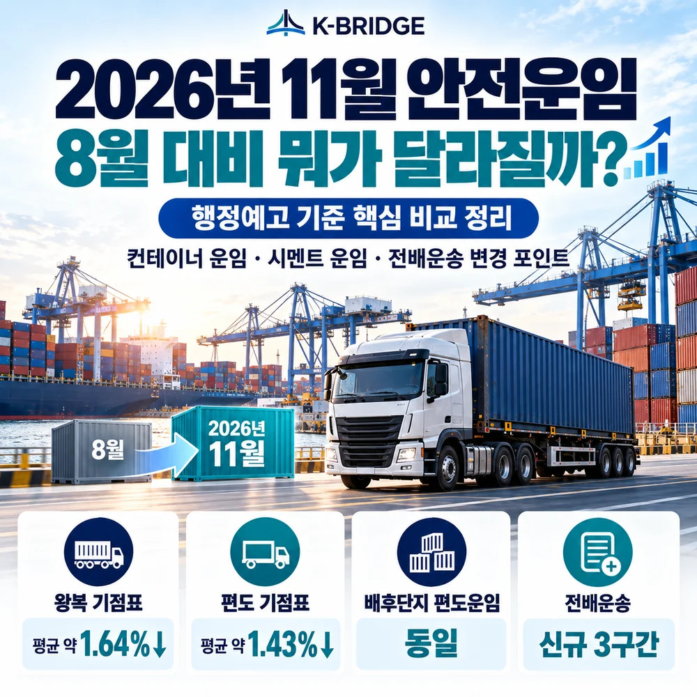
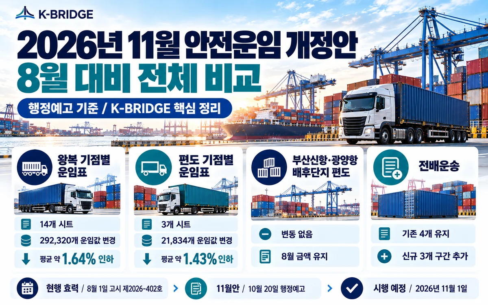
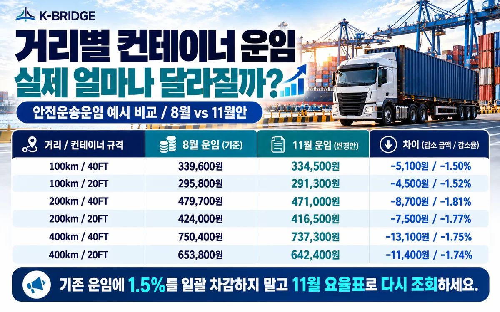
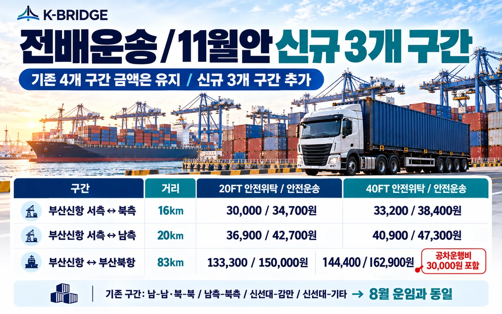

11월 운임을 8월 운임에서 일률적으로 빼도 될까요?
구간별 차이가 있어 단순 비율로 환산하면 실제 금액과 다를 수 있습니다. 10월 20일 행정예고안 기준 내용과 최종 고시를 구분하고 해당 구간 운임표로 비교해야 합니다.
8월·11월 운임 변경 항목 확인먼저 결론
11월 적용 예정 개정안은 일반 컨테이너 운임과 시멘트 운임을 낮추고 전배운송 3개 구간을 추가하는 내용입니다. 기점별 왕복 운임값은 평균 약 1.64%, 편도 운임값은 평균 약 1.43% 낮아지지만 배후단지 고정 편도운임은 같습니다.
1. 11월 운임은 10월 20일 행정예고안 기준
2026년 10월 25일 확인 기준, 현행 고시는 8월 1일 시행된 국토교통부 고시 제2026-402호입니다. 11월 1일 시행 예정 내용은 아직 행정예고안이므로 최종 고시 여부를 확인해야 합니다.
2. 운임이 다시 조정되는 이유
유가변동 조항에 따라 직전 3개월 평균 유가가 기준보다 50원 이상 변동하면 운임을 조정할 수 있습니다. 이번 11월안은 2026년 7~9월 유가 변동 등을 반영하여 운임표를 다시 제시한 것입니다.

3. 8월 대비 항목별 변경
| 항목 | 변경 | 핵심 |
|---|---|---|
| 컨테이너 기점별 왕복 | 평균 약 -1.64% | 14개 시트 292,320개 운임값 변경 |
| 기점별 편도 | 평균 약 -1.43% | 3개 시트 21,834개 운임값 변경 |
| 배후단지 고정 편도 | 동일 | 8월 금액 유지 |
| 시멘트 | 전반적 인하 | 유가 연동한 거리별 재산정 |
| 전배운송 | 3개 구간 추가 | 기존 4개 금액 동일 |

4. 실제 운임 차액 예시
아래는 안전운송운임 왕복 거리표 중 일부이며 단위는 원입니다. 구간별 인하율이 달라 기존 운임에서 일괄적으로 1.5%를 차감해 계산하면 안 됩니다.
| 거리 | 규격 | 8월 | 11월안 | 차이 |
|---|---|---|---|---|
| 100km | 40FT | 339,600 | 334,500 | -5,100 / -1.50% |
| 100km | 20FT | 295,800 | 291,300 | -4,500 / -1.52% |
| 200km | 40FT | 479,700 | 471,000 | -8,700 / -1.81% |
| 200km | 20FT | 424,000 | 416,500 | -7,500 / -1.77% |
| 400km | 40FT | 750,400 | 737,300 | -13,100 / -1.75% |
| 400km | 20FT | 653,800 | 642,400 | -11,400 / -1.74% |
5. 시멘트 운임 조정
시멘트 왕복 운임도 조정됐습니다. 100km 기준 26톤 안전위탁운임은 208,700원에서 205,300원으로, 안전운송운임은 226,800원에서 223,200원으로 낮아집니다. 제주지역 1톤 단가는 100원 단위 반올림 영향으로 일부 동일한 값이 유지될 수 있습니다.

6. 전배운송 신규 구간
기존 전배운송 운임값은 유지하면서 서측-북측, 서측-남측, 부산신항-부산북항 3개 구간이 추가됩니다. 부산신항과 부산북항 간 운임에는 공차운행비 30,000원이 포함됩니다.
| 구간 | 거리 | 20FT 위탁 / 운송 (원) | 40FT 위탁 / 운송 (원) |
|---|---|---|---|
| 부산신항 서측-북측 | 16km | 30,000 / 34,700 | 33,200 / 38,400 |
| 부산신항 서측-남측 | 20km | 36,900 / 42,700 | 40,900 / 47,300 |
| 부산신항-부산북항 | 83km | 133,300 / 150,000 | 144,400 / 162,900 |
7. 화주·포워더 실무 대응
- 11월 1일 적용 전 국토교통부 최종 고시 여부를 확인합니다.
- 컨테이너 종류, 거리, 왕복·편도, 운임 종류를 구분해 새 운임표의 정확한 금액을 조회합니다.
- 배후단지 고정 편도운임과 일반 거리 운임을 혼동하지 않습니다.
- 전배운송은 발생 구간과 원인제공자를 확인합니다.
- 고시 운임표에 부가가치세가 포함되지 않았으며 부대운임은 별도인지 검토합니다.
KEY TAKEAWAYS
일반 컨테이너 운임은 전반적으로 인하, 배후단지 고정 편도는 동일, 전배운송은 신규 3구간이 핵심입니다. 실제 적용 전에 최종 고시를 대조하세요.
8. 자주 묻는 질문
11월 1일 안전운임은 확정됐나요?
11월 개정안에서 컨테이너 운임은 얼마나 바뀌나요?
안전운임을 기존 요금의 1.5%를 빼서 계산해도 되나요?
부산신항과 광양항 배후단지 편도운임도 인하되나요?
전배운송에서 달라지는 점은 무엇인가요?
VAT와 부대비용이 포함된 금액인가요?
NEXT STEP
관련 물류도구
11월 안전운임을 다시 계산해 보세요
케이브릿지는 실제 운송 조건과 적용 운임표를 대조해 국내운송 견적을 안내합니다.